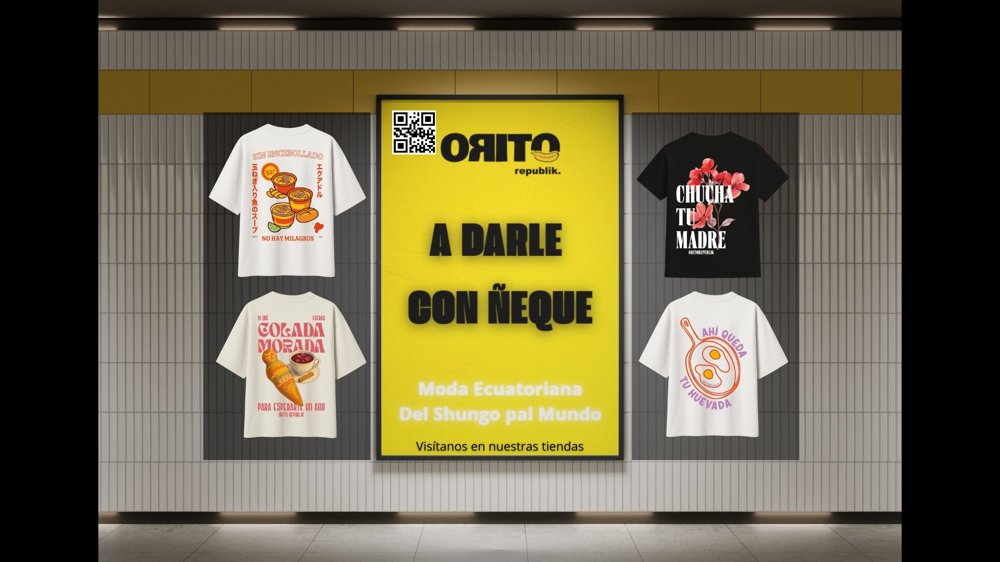
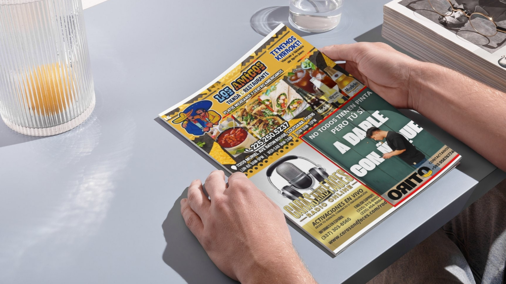
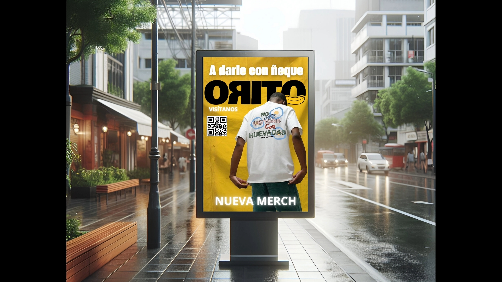

Visual storytelling project inspired by tropical culture, social interaction and the atmosphere of leisure spaces. The illustrations highlight colour, character design and narrative composition.



Narrative illustration proposal inspired by social life, golf culture and appreciation of tropical environments. The project explores character interaction and warm colour palettes.
The visual language combines stylised characters, relaxed social environments and tropical landscape references. The objective is to create a mural-style narrative that communicates identity and atmosphere.